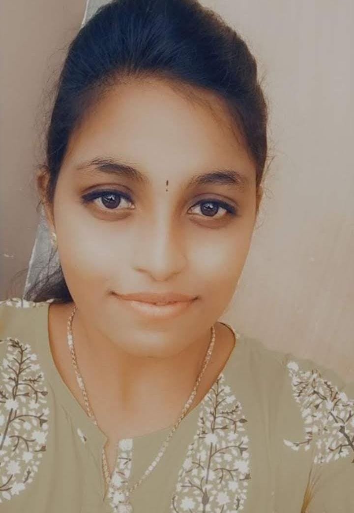

RUBINI E

PROFILE
To be associated with a progressive organization which can provide me
with a dynamic work sphere to extract my inherent skills as a
professionals, where I can utilize my aptitude for the advancement of the
company and to be the part of your company.
EDUCATION
VIT UNIVERSITY
MASTER OF COMPUTER APPLICATION - 76.5%
2021-2023
SREE ABIRAAMI ARTS AND SCIENCE COLLEGE
BACHELOR OF COMPUTER APPLICATION - 83.2%
2018-2021
PROJECT
SKIN CANCER CLASSIFICATION USING DEEP LEARNING ALGORITHMS
The developed project "SKIN CANCER CLASSIFICATION" is useful for humans to identify skin cancer without going to hospital.
Coding : PYTHON
Algorithms : CNN, RESNET-50, INCEPTION-RESNET-V2.
TECHINCAL SKILL
- JAVA
- PYTHON
- HTML/CSS
- OOPS
- DATABASE
- JAVASCRIPT
ACHIEVEMENTS
- Paper Presentation in "NETWORKING" at NCRICS 2020
- Paper Presentation in "CLOUD COMPUTING" at AVISO 2020